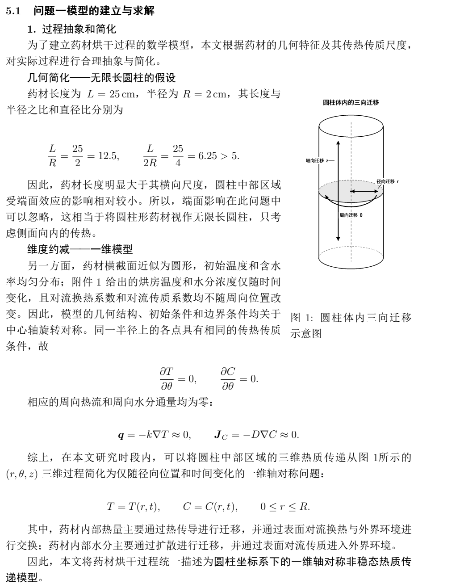
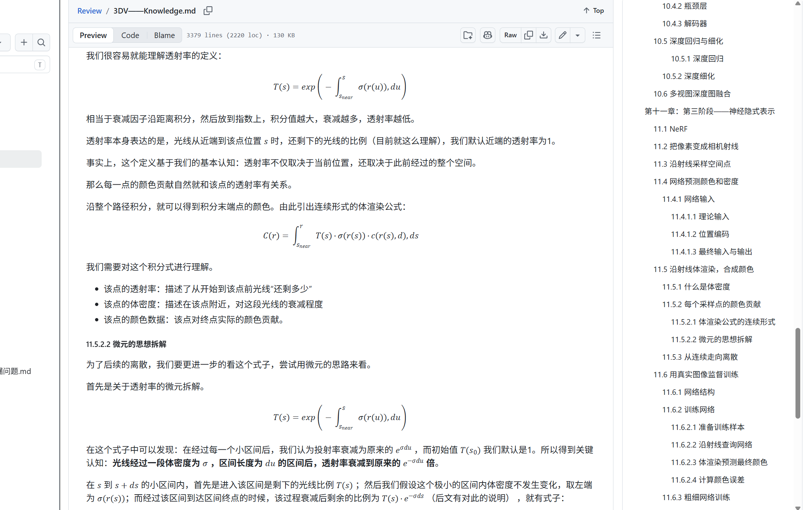
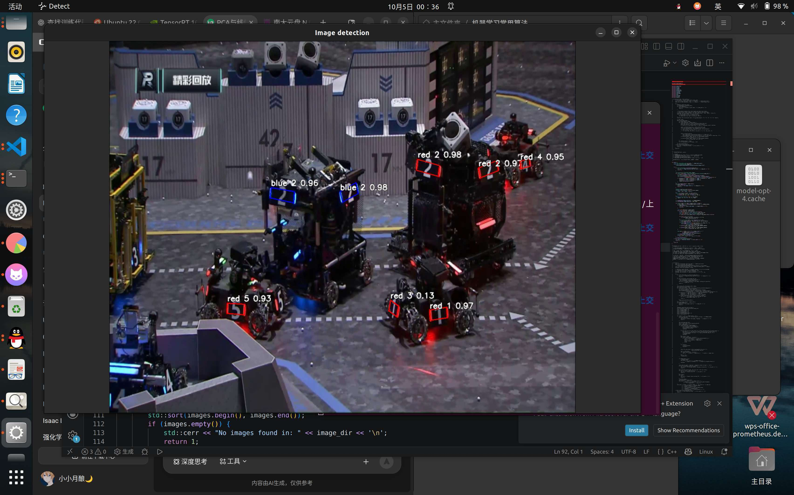

UNDERGRADUATE INNOVATION PROJECT / 2026
让机器人
看见，进而触达
面向遮挡与堆叠场景的机器人主动感知与智能抓取方法研究
从复杂场景理解，到可靠动作生成
PERCEIVE · REASON · GRASP
01 / WHY IT MATTERS
看见遮挡，
理解关系。
让机器人不止“识别物体”，而是读懂堆叠背后的空间关系，找到真正可执行的抓取机会。
感知复杂场景中的目标与几何线索
判断遮挡、支撑与可达关系
规划可抓取区域与抓取位姿
执行把理解转化为稳定动作
FROM VISUAL CUES TO ACTION
02 / TEAM PROFILE
朱昱安
具备扎实的数学基础，掌握 C、C++、Python 等编程语言；对智能体、神经网络与深度学习有初步了解，并持续接触目标检测、三维视觉及 ROS。
曾参与数学建模比赛并担任论文手，擅长统筹协调与归纳总结。勤奋踏实、好奇心强，注重团队合作，也乐于把新知识快速带进实践。
数学建模Python / C++深度学习3D 视觉ROS
在项目中的期待从文献与数据集整理出发，参与实验环境搭建、项目架构设计、模块实现与结果可视化。

基础扎实 / 善于协作
03 / RESEARCH JOURNEY
从尝试，
走向问题本身。
参与金种子项目，围绕端到端注视估计开展研究，希望降低模型在 GazeCapture 数据集上的测试误差。
曾在时序网络中加入注视角度、变化速度与加速度约束。角度和速度约束带来一定改善，但尚未超过 ResNet-50 单帧模型。
在老师与学长指导下，重新审视路径，转向单帧图像，并尝试加入双眼裁剪图像，探索局部信息能否提升估计精度。
下一步贡献参与图像数据增强、三维相机位姿解算更新，以及决策模块 action expert 的开发。

04 / ENGINEERING PRACTICE
让算法，
走到真实世界。
作为校 RoboMaster 战队视觉组成员，参与自瞄算法开发：基于 YOLOv5s 适配装甲板四角点，设计 Mosaic 拼接增强与弹丸遮挡合成，并调试整套模型参数。
目前继续开发装甲板识别评估、PnP 位姿解算和 EKF 运动状态预测；也在 Jetson Orin NX 上部署 ROS 相机节点并调试与下位机通信。
YOLOv5sPnP / EKFJetson Orin NXROS
项目中可承担目标检测、动作序列生成与 ROS 框架部署调试。

06 / EXPECTED OUTCOME
感知 → 抓取
把空间理解，
变成可靠动作。
围绕遮挡与堆叠场景，系统学习并实践目标识别、空间关系理解、可抓取区域判断与抓取位姿生成。
01 / 看得清建立场景与目标表征
02 / 想得明理解遮挡与空间关系
03 / 抓得准生成可执行抓取位姿
04 / 可验证采集实验结果并可视化
SEE MORE · GRASP BETTER